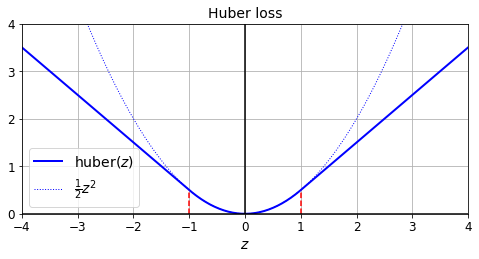

# Python ≥3.5 is required
import sys
assert sys.version_info >= (3, 5)
# Scikit-Learn ≥0.20 is required
import sklearn
assert sklearn.__version__ >= "0.20"
try:
# %tensorflow_version only exists in Colab.
%tensorflow_version 2.x
except Exception:
pass
# TensorFlow ≥2.4 is required in this notebook
# Earlier 2.x versions will mostly work the same, but with a few bugs
import tensorflow as tf
from tensorflow import keras
assert tf.__version__ >= "2.4"
# Common imports
import numpy as np
import os
# to make this notebook's output stable across runs
np.random.seed(42)
tf.random.set_seed(42)
# To plot pretty figures
%matplotlib inline
import matplotlib as mpl
import matplotlib.pyplot as plt
mpl.rc('axes', labelsize=14)
mpl.rc('xtick', labelsize=12)
mpl.rc('ytick', labelsize=12)
# Where to save the figures
PROJECT_ROOT_DIR = "."
CHAPTER_ID = "deep"
IMAGES_PATH = os.path.join(PROJECT_ROOT_DIR, "images", CHAPTER_ID)
os.makedirs(IMAGES_PATH, exist_ok=True)
def save_fig(fig_id, tight_layout=True, fig_extension="png", resolution=300):
path = os.path.join(IMAGES_PATH, fig_id + "." + fig_extension)
print("Saving figure", fig_id)
if tight_layout:
plt.tight_layout()
plt.savefig(path, format=fig_extension, dpi=resolution)Chapter 12 – Custom Models and Training with TensorFlow
This notebook contains all the sample code in chapter 12.
Setup
First, let’s import a few common modules, ensure MatplotLib plots figures inline and prepare a function to save the figures. We also check that Python 3.5 or later is installed (although Python 2.x may work, it is deprecated so we strongly recommend you use Python 3 instead), as well as Scikit-Learn ≥0.20 and TensorFlow ≥2.0.
Tensors and operations
Tensors
tf.constant([[1., 2., 3.], [4., 5., 6.]]) # matrix<tf.Tensor: shape=(2, 3), dtype=float32, numpy=
array([[1., 2., 3.],
[4., 5., 6.]], dtype=float32)>tf.constant(42) # scalar<tf.Tensor: shape=(), dtype=int32, numpy=42>t = tf.constant([[1., 2., 3.], [4., 5., 6.]])
t<tf.Tensor: shape=(2, 3), dtype=float32, numpy=
array([[1., 2., 3.],
[4., 5., 6.]], dtype=float32)>t.shapeTensorShape([2, 3])t.dtypetf.float32Indexing
t[:, 1:]<tf.Tensor: shape=(2, 2), dtype=float32, numpy=
array([[2., 3.],
[5., 6.]], dtype=float32)>t[..., 1, tf.newaxis]<tf.Tensor: shape=(2, 1), dtype=float32, numpy=
array([[2.],
[5.]], dtype=float32)>Ops
t + 10<tf.Tensor: shape=(2, 3), dtype=float32, numpy=
array([[11., 12., 13.],
[14., 15., 16.]], dtype=float32)>tf.square(t)<tf.Tensor: shape=(2, 3), dtype=float32, numpy=
array([[ 1., 4., 9.],
[16., 25., 36.]], dtype=float32)>t @ tf.transpose(t)<tf.Tensor: shape=(2, 2), dtype=float32, numpy=
array([[14., 32.],
[32., 77.]], dtype=float32)>Using keras.backend
from tensorflow import keras
K = keras.backend
K.square(K.transpose(t)) + 10<tf.Tensor: shape=(3, 2), dtype=float32, numpy=
array([[11., 26.],
[14., 35.],
[19., 46.]], dtype=float32)>From/To NumPy
a = np.array([2., 4., 5.])
tf.constant(a)<tf.Tensor: shape=(3,), dtype=float64, numpy=array([2., 4., 5.])>t.numpy()array([[1., 2., 3.],
[4., 5., 6.]], dtype=float32)np.array(t)array([[1., 2., 3.],
[4., 5., 6.]], dtype=float32)tf.square(a)<tf.Tensor: shape=(3,), dtype=float64, numpy=array([ 4., 16., 25.])>np.square(t)array([[ 1., 4., 9.],
[16., 25., 36.]], dtype=float32)Conflicting Types
try:
tf.constant(2.0) + tf.constant(40)
except tf.errors.InvalidArgumentError as ex:
print(ex)cannot compute AddV2 as input #1(zero-based) was expected to be a float tensor but is a int32 tensor [Op:AddV2]try:
tf.constant(2.0) + tf.constant(40., dtype=tf.float64)
except tf.errors.InvalidArgumentError as ex:
print(ex)cannot compute AddV2 as input #1(zero-based) was expected to be a float tensor but is a double tensor [Op:AddV2]t2 = tf.constant(40., dtype=tf.float64)
tf.constant(2.0) + tf.cast(t2, tf.float32)<tf.Tensor: shape=(), dtype=float32, numpy=42.0>Strings
tf.constant(b"hello world")<tf.Tensor: shape=(), dtype=string, numpy=b'hello world'>tf.constant("café")<tf.Tensor: shape=(), dtype=string, numpy=b'caf\xc3\xa9'>u = tf.constant([ord(c) for c in "café"])
u<tf.Tensor: shape=(4,), dtype=int32, numpy=array([ 99, 97, 102, 233], dtype=int32)>b = tf.strings.unicode_encode(u, "UTF-8")
tf.strings.length(b, unit="UTF8_CHAR")<tf.Tensor: shape=(), dtype=int32, numpy=4>tf.strings.unicode_decode(b, "UTF-8")<tf.Tensor: shape=(4,), dtype=int32, numpy=array([ 99, 97, 102, 233], dtype=int32)>String arrays
p = tf.constant(["Café", "Coffee", "caffè", "咖啡"])tf.strings.length(p, unit="UTF8_CHAR")<tf.Tensor: shape=(4,), dtype=int32, numpy=array([4, 6, 5, 2], dtype=int32)>r = tf.strings.unicode_decode(p, "UTF8")
r<tf.RaggedTensor [[67, 97, 102, 233], [67, 111, 102, 102, 101, 101], [99, 97, 102, 102, 232], [21654, 21857]]>print(r)<tf.RaggedTensor [[67, 97, 102, 233], [67, 111, 102, 102, 101, 101], [99, 97, 102, 102, 232], [21654, 21857]]>Ragged tensors
print(r[1])tf.Tensor([ 67 111 102 102 101 101], shape=(6,), dtype=int32)print(r[1:3])<tf.RaggedTensor [[67, 111, 102, 102, 101, 101], [99, 97, 102, 102, 232]]>r2 = tf.ragged.constant([[65, 66], [], [67]])
print(tf.concat([r, r2], axis=0))<tf.RaggedTensor [[67, 97, 102, 233], [67, 111, 102, 102, 101, 101], [99, 97, 102, 102, 232], [21654, 21857], [65, 66], [], [67]]>r3 = tf.ragged.constant([[68, 69, 70], [71], [], [72, 73]])
print(tf.concat([r, r3], axis=1))<tf.RaggedTensor [[67, 97, 102, 233, 68, 69, 70], [67, 111, 102, 102, 101, 101, 71], [99, 97, 102, 102, 232], [21654, 21857, 72, 73]]>tf.strings.unicode_encode(r3, "UTF-8")<tf.Tensor: shape=(4,), dtype=string, numpy=array([b'DEF', b'G', b'', b'HI'], dtype=object)>r.to_tensor()<tf.Tensor: shape=(4, 6), dtype=int32, numpy=
array([[ 67, 97, 102, 233, 0, 0],
[ 67, 111, 102, 102, 101, 101],
[ 99, 97, 102, 102, 232, 0],
[21654, 21857, 0, 0, 0, 0]], dtype=int32)>Sparse tensors
s = tf.SparseTensor(indices=[[0, 1], [1, 0], [2, 3]],
values=[1., 2., 3.],
dense_shape=[3, 4])print(s)SparseTensor(indices=tf.Tensor(
[[0 1]
[1 0]
[2 3]], shape=(3, 2), dtype=int64), values=tf.Tensor([1. 2. 3.], shape=(3,), dtype=float32), dense_shape=tf.Tensor([3 4], shape=(2,), dtype=int64))tf.sparse.to_dense(s)<tf.Tensor: shape=(3, 4), dtype=float32, numpy=
array([[0., 1., 0., 0.],
[2., 0., 0., 0.],
[0., 0., 0., 3.]], dtype=float32)>s2 = s * 2.0try:
s3 = s + 1.
except TypeError as ex:
print(ex)unsupported operand type(s) for +: 'SparseTensor' and 'float's4 = tf.constant([[10., 20.], [30., 40.], [50., 60.], [70., 80.]])
tf.sparse.sparse_dense_matmul(s, s4)<tf.Tensor: shape=(3, 2), dtype=float32, numpy=
array([[ 30., 40.],
[ 20., 40.],
[210., 240.]], dtype=float32)>s5 = tf.SparseTensor(indices=[[0, 2], [0, 1]],
values=[1., 2.],
dense_shape=[3, 4])
print(s5)SparseTensor(indices=tf.Tensor(
[[0 2]
[0 1]], shape=(2, 2), dtype=int64), values=tf.Tensor([1. 2.], shape=(2,), dtype=float32), dense_shape=tf.Tensor([3 4], shape=(2,), dtype=int64))try:
tf.sparse.to_dense(s5)
except tf.errors.InvalidArgumentError as ex:
print(ex)indices[1] = [0,1] is out of order. Many sparse ops require sorted indices.
Use `tf.sparse.reorder` to create a correctly ordered copy.
[Op:SparseToDense]s6 = tf.sparse.reorder(s5)
tf.sparse.to_dense(s6)<tf.Tensor: shape=(3, 4), dtype=float32, numpy=
array([[0., 2., 1., 0.],
[0., 0., 0., 0.],
[0., 0., 0., 0.]], dtype=float32)>Sets
set1 = tf.constant([[2, 3, 5, 7], [7, 9, 0, 0]])
set2 = tf.constant([[4, 5, 6], [9, 10, 0]])
tf.sparse.to_dense(tf.sets.union(set1, set2))<tf.Tensor: shape=(2, 6), dtype=int32, numpy=
array([[ 2, 3, 4, 5, 6, 7],
[ 0, 7, 9, 10, 0, 0]], dtype=int32)>tf.sparse.to_dense(tf.sets.difference(set1, set2))<tf.Tensor: shape=(2, 3), dtype=int32, numpy=
array([[2, 3, 7],
[7, 0, 0]], dtype=int32)>tf.sparse.to_dense(tf.sets.intersection(set1, set2))<tf.Tensor: shape=(2, 2), dtype=int32, numpy=
array([[5, 0],
[0, 9]], dtype=int32)>Variables
v = tf.Variable([[1., 2., 3.], [4., 5., 6.]])v.assign(2 * v)<tf.Variable 'UnreadVariable' shape=(2, 3) dtype=float32, numpy=
array([[ 2., 4., 6.],
[ 8., 10., 12.]], dtype=float32)>v[0, 1].assign(42)<tf.Variable 'UnreadVariable' shape=(2, 3) dtype=float32, numpy=
array([[ 2., 42., 6.],
[ 8., 10., 12.]], dtype=float32)>v[:, 2].assign([0., 1.])<tf.Variable 'UnreadVariable' shape=(2, 3) dtype=float32, numpy=
array([[ 2., 42., 0.],
[ 8., 10., 1.]], dtype=float32)>try:
v[1] = [7., 8., 9.]
except TypeError as ex:
print(ex)'ResourceVariable' object does not support item assignmentv.scatter_nd_update(indices=[[0, 0], [1, 2]],
updates=[100., 200.])<tf.Variable 'UnreadVariable' shape=(2, 3) dtype=float32, numpy=
array([[100., 42., 0.],
[ 8., 10., 200.]], dtype=float32)>sparse_delta = tf.IndexedSlices(values=[[1., 2., 3.], [4., 5., 6.]],
indices=[1, 0])
v.scatter_update(sparse_delta)<tf.Variable 'UnreadVariable' shape=(2, 3) dtype=float32, numpy=
array([[4., 5., 6.],
[1., 2., 3.]], dtype=float32)>Tensor Arrays
array = tf.TensorArray(dtype=tf.float32, size=3)
array = array.write(0, tf.constant([1., 2.]))
array = array.write(1, tf.constant([3., 10.]))
array = array.write(2, tf.constant([5., 7.]))array.read(1)<tf.Tensor: shape=(2,), dtype=float32, numpy=array([ 3., 10.], dtype=float32)>array.stack()<tf.Tensor: shape=(3, 2), dtype=float32, numpy=
array([[1., 2.],
[0., 0.],
[5., 7.]], dtype=float32)>mean, variance = tf.nn.moments(array.stack(), axes=0)
mean<tf.Tensor: shape=(2,), dtype=float32, numpy=array([2., 3.], dtype=float32)>variance<tf.Tensor: shape=(2,), dtype=float32, numpy=array([4.6666665, 8.666667 ], dtype=float32)>Custom loss function
Let’s start by loading and preparing the California housing dataset. We first load it, then split it into a training set, a validation set and a test set, and finally we scale it:
from sklearn.datasets import fetch_california_housing
from sklearn.model_selection import train_test_split
from sklearn.preprocessing import StandardScaler
housing = fetch_california_housing()
X_train_full, X_test, y_train_full, y_test = train_test_split(
housing.data, housing.target.reshape(-1, 1), random_state=42)
X_train, X_valid, y_train, y_valid = train_test_split(
X_train_full, y_train_full, random_state=42)
scaler = StandardScaler()
X_train_scaled = scaler.fit_transform(X_train)
X_valid_scaled = scaler.transform(X_valid)
X_test_scaled = scaler.transform(X_test)def huber_fn(y_true, y_pred):
error = y_true - y_pred
is_small_error = tf.abs(error) < 1
squared_loss = tf.square(error) / 2
linear_loss = tf.abs(error) - 0.5
return tf.where(is_small_error, squared_loss, linear_loss)plt.figure(figsize=(8, 3.5))
z = np.linspace(-4, 4, 200)
plt.plot(z, huber_fn(0, z), "b-", linewidth=2, label="huber($z$)")
plt.plot(z, z**2 / 2, "b:", linewidth=1, label=r"$\frac{1}{2}z^2$")
plt.plot([-1, -1], [0, huber_fn(0., -1.)], "r--")
plt.plot([1, 1], [0, huber_fn(0., 1.)], "r--")
plt.gca().axhline(y=0, color='k')
plt.gca().axvline(x=0, color='k')
plt.axis([-4, 4, 0, 4])
plt.grid(True)
plt.xlabel("$z$")
plt.legend(fontsize=14)
plt.title("Huber loss", fontsize=14)
plt.show()
input_shape = X_train.shape[1:]
model = keras.models.Sequential([
keras.layers.Dense(30, activation="selu", kernel_initializer="lecun_normal",
input_shape=input_shape),
keras.layers.Dense(1),
])model.compile(loss=huber_fn, optimizer="nadam", metrics=["mae"])model.fit(X_train_scaled, y_train, epochs=2,
validation_data=(X_valid_scaled, y_valid))Epoch 1/2
363/363 [==============================] - 1s 2ms/step - loss: 1.0443 - mae: 1.4660 - val_loss: 0.2862 - val_mae: 0.5866
Epoch 2/2
363/363 [==============================] - 0s 737us/step - loss: 0.2379 - mae: 0.5407 - val_loss: 0.2382 - val_mae: 0.5281<tensorflow.python.keras.callbacks.History at 0x7fc000dcc850>Saving/Loading Models with Custom Objects
model.save("my_model_with_a_custom_loss.h5")model = keras.models.load_model("my_model_with_a_custom_loss.h5",
custom_objects={"huber_fn": huber_fn})model.fit(X_train_scaled, y_train, epochs=2,
validation_data=(X_valid_scaled, y_valid))Epoch 1/2
363/363 [==============================] - 1s 970us/step - loss: 0.2054 - mae: 0.4982 - val_loss: 0.2209 - val_mae: 0.5050
Epoch 2/2
363/363 [==============================] - 0s 769us/step - loss: 0.1999 - mae: 0.4900 - val_loss: 0.2127 - val_mae: 0.4986<tensorflow.python.keras.callbacks.History at 0x7fbfd8c09090>def create_huber(threshold=1.0):
def huber_fn(y_true, y_pred):
error = y_true - y_pred
is_small_error = tf.abs(error) < threshold
squared_loss = tf.square(error) / 2
linear_loss = threshold * tf.abs(error) - threshold**2 / 2
return tf.where(is_small_error, squared_loss, linear_loss)
return huber_fnmodel.compile(loss=create_huber(2.0), optimizer="nadam", metrics=["mae"])model.fit(X_train_scaled, y_train, epochs=2,
validation_data=(X_valid_scaled, y_valid))Epoch 1/2
363/363 [==============================] - 1s 1ms/step - loss: 0.2318 - mae: 0.4979 - val_loss: 0.2540 - val_mae: 0.4907
Epoch 2/2
363/363 [==============================] - 0s 749us/step - loss: 0.2309 - mae: 0.4960 - val_loss: 0.2372 - val_mae: 0.4879<tensorflow.python.keras.callbacks.History at 0x7fbfd8c969d0>model.save("my_model_with_a_custom_loss_threshold_2.h5")model = keras.models.load_model("my_model_with_a_custom_loss_threshold_2.h5",
custom_objects={"huber_fn": create_huber(2.0)})model.fit(X_train_scaled, y_train, epochs=2,
validation_data=(X_valid_scaled, y_valid))Epoch 1/2
363/363 [==============================] - 1s 1ms/step - loss: 0.2147 - mae: 0.4800 - val_loss: 0.2133 - val_mae: 0.4654
Epoch 2/2
363/363 [==============================] - 0s 763us/step - loss: 0.2119 - mae: 0.4762 - val_loss: 0.1992 - val_mae: 0.4643<tensorflow.python.keras.callbacks.History at 0x7fbff7a0a590>class HuberLoss(keras.losses.Loss):
def __init__(self, threshold=1.0, **kwargs):
self.threshold = threshold
super().__init__(**kwargs)
def call(self, y_true, y_pred):
error = y_true - y_pred
is_small_error = tf.abs(error) < self.threshold
squared_loss = tf.square(error) / 2
linear_loss = self.threshold * tf.abs(error) - self.threshold**2 / 2
return tf.where(is_small_error, squared_loss, linear_loss)
def get_config(self):
base_config = super().get_config()
return {**base_config, "threshold": self.threshold}model = keras.models.Sequential([
keras.layers.Dense(30, activation="selu", kernel_initializer="lecun_normal",
input_shape=input_shape),
keras.layers.Dense(1),
])model.compile(loss=HuberLoss(2.), optimizer="nadam", metrics=["mae"])model.fit(X_train_scaled, y_train, epochs=2,
validation_data=(X_valid_scaled, y_valid))Epoch 1/2
363/363 [==============================] - 1s 1ms/step - loss: 1.3123 - mae: 1.3345 - val_loss: 0.3378 - val_mae: 0.5485
Epoch 2/2
363/363 [==============================] - 0s 760us/step - loss: 0.2659 - mae: 0.5270 - val_loss: 0.2660 - val_mae: 0.5089<tensorflow.python.keras.callbacks.History at 0x7fbfe06dad50>model.save("my_model_with_a_custom_loss_class.h5")model = keras.models.load_model("my_model_with_a_custom_loss_class.h5",
custom_objects={"HuberLoss": HuberLoss})model.fit(X_train_scaled, y_train, epochs=2,
validation_data=(X_valid_scaled, y_valid))Epoch 1/2
363/363 [==============================] - 1s 966us/step - loss: 0.2286 - mae: 0.4970 - val_loss: 0.2120 - val_mae: 0.4723
Epoch 2/2
363/363 [==============================] - 0s 757us/step - loss: 0.2216 - mae: 0.4904 - val_loss: 0.2045 - val_mae: 0.4725<tensorflow.python.keras.callbacks.History at 0x7fbfb0630d50>model.loss.threshold2.0Other Custom Functions
keras.backend.clear_session()
np.random.seed(42)
tf.random.set_seed(42)def my_softplus(z): # return value is just tf.nn.softplus(z)
return tf.math.log(tf.exp(z) + 1.0)
def my_glorot_initializer(shape, dtype=tf.float32):
stddev = tf.sqrt(2. / (shape[0] + shape[1]))
return tf.random.normal(shape, stddev=stddev, dtype=dtype)
def my_l1_regularizer(weights):
return tf.reduce_sum(tf.abs(0.01 * weights))
def my_positive_weights(weights): # return value is just tf.nn.relu(weights)
return tf.where(weights < 0., tf.zeros_like(weights), weights)layer = keras.layers.Dense(1, activation=my_softplus,
kernel_initializer=my_glorot_initializer,
kernel_regularizer=my_l1_regularizer,
kernel_constraint=my_positive_weights)keras.backend.clear_session()
np.random.seed(42)
tf.random.set_seed(42)model = keras.models.Sequential([
keras.layers.Dense(30, activation="selu", kernel_initializer="lecun_normal",
input_shape=input_shape),
keras.layers.Dense(1, activation=my_softplus,
kernel_regularizer=my_l1_regularizer,
kernel_constraint=my_positive_weights,
kernel_initializer=my_glorot_initializer),
])model.compile(loss="mse", optimizer="nadam", metrics=["mae"])model.fit(X_train_scaled, y_train, epochs=2,
validation_data=(X_valid_scaled, y_valid))Epoch 1/2
363/363 [==============================] - 1s 1ms/step - loss: 2.3829 - mae: 1.1635 - val_loss: 1.4154 - val_mae: 0.5607
Epoch 2/2
363/363 [==============================] - 0s 757us/step - loss: 0.6299 - mae: 0.5410 - val_loss: 1.4399 - val_mae: 0.5137<tensorflow.python.keras.callbacks.History at 0x7fbfd8e49690>model.save("my_model_with_many_custom_parts.h5")model = keras.models.load_model(
"my_model_with_many_custom_parts.h5",
custom_objects={
"my_l1_regularizer": my_l1_regularizer,
"my_positive_weights": my_positive_weights,
"my_glorot_initializer": my_glorot_initializer,
"my_softplus": my_softplus,
})class MyL1Regularizer(keras.regularizers.Regularizer):
def __init__(self, factor):
self.factor = factor
def __call__(self, weights):
return tf.reduce_sum(tf.abs(self.factor * weights))
def get_config(self):
return {"factor": self.factor}keras.backend.clear_session()
np.random.seed(42)
tf.random.set_seed(42)model = keras.models.Sequential([
keras.layers.Dense(30, activation="selu", kernel_initializer="lecun_normal",
input_shape=input_shape),
keras.layers.Dense(1, activation=my_softplus,
kernel_regularizer=MyL1Regularizer(0.01),
kernel_constraint=my_positive_weights,
kernel_initializer=my_glorot_initializer),
])model.compile(loss="mse", optimizer="nadam", metrics=["mae"])model.fit(X_train_scaled, y_train, epochs=2,
validation_data=(X_valid_scaled, y_valid))Epoch 1/2
363/363 [==============================] - 1s 1ms/step - loss: 2.3829 - mae: 1.1635 - val_loss: 1.4154 - val_mae: 0.5607
Epoch 2/2
363/363 [==============================] - 0s 757us/step - loss: 0.6299 - mae: 0.5410 - val_loss: 1.4399 - val_mae: 0.5137<tensorflow.python.keras.callbacks.History at 0x7fbfd90141d0>model.save("my_model_with_many_custom_parts.h5")model = keras.models.load_model(
"my_model_with_many_custom_parts.h5",
custom_objects={
"MyL1Regularizer": MyL1Regularizer,
"my_positive_weights": my_positive_weights,
"my_glorot_initializer": my_glorot_initializer,
"my_softplus": my_softplus,
})Custom Metrics
keras.backend.clear_session()
np.random.seed(42)
tf.random.set_seed(42)model = keras.models.Sequential([
keras.layers.Dense(30, activation="selu", kernel_initializer="lecun_normal",
input_shape=input_shape),
keras.layers.Dense(1),
])model.compile(loss="mse", optimizer="nadam", metrics=[create_huber(2.0)])model.fit(X_train_scaled, y_train, epochs=2)Epoch 1/2
363/363 [==============================] - 1s 572us/step - loss: 3.5903 - huber_fn: 1.5558
Epoch 2/2
363/363 [==============================] - 0s 552us/step - loss: 0.8054 - huber_fn: 0.3095<tensorflow.python.keras.callbacks.History at 0x7fbff7cbe850>Note: if you use the same function as the loss and a metric, you may be surprised to see different results. This is generally just due to floating point precision errors: even though the mathematical equations are equivalent, the operations are not run in the same order, which can lead to small differences. Moreover, when using sample weights, there’s more than just precision errors: * the loss since the start of the epoch is the mean of all batch losses seen so far. Each batch loss is the sum of the weighted instance losses divided by the batch size (not the sum of weights, so the batch loss is not the weighted mean of the losses). * the metric since the start of the epoch is equal to the sum of weighted instance losses divided by sum of all weights seen so far. In other words, it is the weighted mean of all the instance losses. Not the same thing.
If you do the math, you will find that loss = metric * mean of sample weights (plus some floating point precision error).
model.compile(loss=create_huber(2.0), optimizer="nadam", metrics=[create_huber(2.0)])sample_weight = np.random.rand(len(y_train))
history = model.fit(X_train_scaled, y_train, epochs=2, sample_weight=sample_weight)Epoch 1/2
363/363 [==============================] - 1s 598us/step - loss: 0.1245 - huber_fn: 0.2515
Epoch 2/2
363/363 [==============================] - 0s 558us/step - loss: 0.1216 - huber_fn: 0.2473history.history["loss"][0], history.history["huber_fn"][0] * sample_weight.mean()(0.11749906837940216, 0.11906625573138947)Streaming metrics
precision = keras.metrics.Precision()
precision([0, 1, 1, 1, 0, 1, 0, 1], [1, 1, 0, 1, 0, 1, 0, 1])<tf.Tensor: shape=(), dtype=float32, numpy=0.8>precision([0, 1, 0, 0, 1, 0, 1, 1], [1, 0, 1, 1, 0, 0, 0, 0])<tf.Tensor: shape=(), dtype=float32, numpy=0.5>precision.result()<tf.Tensor: shape=(), dtype=float32, numpy=0.5>precision.variables[<tf.Variable 'true_positives:0' shape=(1,) dtype=float32, numpy=array([4.], dtype=float32)>,
<tf.Variable 'false_positives:0' shape=(1,) dtype=float32, numpy=array([4.], dtype=float32)>]precision.reset_states()Creating a streaming metric:
class HuberMetric(keras.metrics.Metric):
def __init__(self, threshold=1.0, **kwargs):
super().__init__(**kwargs) # handles base args (e.g., dtype)
self.threshold = threshold
self.huber_fn = create_huber(threshold)
self.total = self.add_weight("total", initializer="zeros")
self.count = self.add_weight("count", initializer="zeros")
def update_state(self, y_true, y_pred, sample_weight=None):
metric = self.huber_fn(y_true, y_pred)
self.total.assign_add(tf.reduce_sum(metric))
self.count.assign_add(tf.cast(tf.size(y_true), tf.float32))
def result(self):
return self.total / self.count
def get_config(self):
base_config = super().get_config()
return {**base_config, "threshold": self.threshold}m = HuberMetric(2.)
# total = 2 * |10 - 2| - 2²/2 = 14
# count = 1
# result = 14 / 1 = 14
m(tf.constant([[2.]]), tf.constant([[10.]])) <tf.Tensor: shape=(), dtype=float32, numpy=14.0># total = total + (|1 - 0|² / 2) + (2 * |9.25 - 5| - 2² / 2) = 14 + 7 = 21
# count = count + 2 = 3
# result = total / count = 21 / 3 = 7
m(tf.constant([[0.], [5.]]), tf.constant([[1.], [9.25]]))
m.result()<tf.Tensor: shape=(), dtype=float32, numpy=7.0>m.variables[<tf.Variable 'total:0' shape=() dtype=float32, numpy=21.0>,
<tf.Variable 'count:0' shape=() dtype=float32, numpy=3.0>]m.reset_states()
m.variables[<tf.Variable 'total:0' shape=() dtype=float32, numpy=0.0>,
<tf.Variable 'count:0' shape=() dtype=float32, numpy=0.0>]Let’s check that the HuberMetric class works well:
keras.backend.clear_session()
np.random.seed(42)
tf.random.set_seed(42)model = keras.models.Sequential([
keras.layers.Dense(30, activation="selu", kernel_initializer="lecun_normal",
input_shape=input_shape),
keras.layers.Dense(1),
])model.compile(loss=create_huber(2.0), optimizer="nadam", metrics=[HuberMetric(2.0)])model.fit(X_train_scaled.astype(np.float32), y_train.astype(np.float32), epochs=2)Epoch 1/2
363/363 [==============================] - 1s 592us/step - loss: 1.5182 - huber_metric: 1.5182
Epoch 2/2
363/363 [==============================] - 0s 538us/step - loss: 0.2909 - huber_metric: 0.2909<tensorflow.python.keras.callbacks.History at 0x7fc000fdfbd0>model.save("my_model_with_a_custom_metric.h5")model = keras.models.load_model("my_model_with_a_custom_metric.h5",
custom_objects={"huber_fn": create_huber(2.0),
"HuberMetric": HuberMetric})model.fit(X_train_scaled.astype(np.float32), y_train.astype(np.float32), epochs=2)Epoch 1/2
363/363 [==============================] - 0s 545us/step - loss: 0.2350 - huber_metric: 0.2350
Epoch 2/2
363/363 [==============================] - 0s 524us/step - loss: 0.2278 - huber_metric: 0.2278<tensorflow.python.keras.callbacks.History at 0x7fc0011c1a50>Warning: In TF 2.2, tf.keras adds an extra first metric in model.metrics at position 0 (see TF issue #38150). This forces us to use model.metrics[-1] rather than model.metrics[0] to access the HuberMetric.
model.metrics[-1].threshold2.0Looks like it works fine! More simply, we could have created the class like this:
class HuberMetric(keras.metrics.Mean):
def __init__(self, threshold=1.0, name='HuberMetric', dtype=None):
self.threshold = threshold
self.huber_fn = create_huber(threshold)
super().__init__(name=name, dtype=dtype)
def update_state(self, y_true, y_pred, sample_weight=None):
metric = self.huber_fn(y_true, y_pred)
super(HuberMetric, self).update_state(metric, sample_weight)
def get_config(self):
base_config = super().get_config()
return {**base_config, "threshold": self.threshold} This class handles shapes better, and it also supports sample weights.
keras.backend.clear_session()
np.random.seed(42)
tf.random.set_seed(42)model = keras.models.Sequential([
keras.layers.Dense(30, activation="selu", kernel_initializer="lecun_normal",
input_shape=input_shape),
keras.layers.Dense(1),
])model.compile(loss=keras.losses.Huber(2.0), optimizer="nadam", weighted_metrics=[HuberMetric(2.0)])sample_weight = np.random.rand(len(y_train))
history = model.fit(X_train_scaled.astype(np.float32), y_train.astype(np.float32),
epochs=2, sample_weight=sample_weight)Epoch 1/2
363/363 [==============================] - 1s 627us/step - loss: 0.7800 - HuberMetric: 1.5672
Epoch 2/2
363/363 [==============================] - 0s 607us/step - loss: 0.1462 - HuberMetric: 0.2939history.history["loss"][0], history.history["HuberMetric"][0] * sample_weight.mean()(0.44554394483566284, 0.44554404180100277)model.save("my_model_with_a_custom_metric_v2.h5")model = keras.models.load_model("my_model_with_a_custom_metric_v2.h5",
custom_objects={"HuberMetric": HuberMetric})model.fit(X_train_scaled.astype(np.float32), y_train.astype(np.float32), epochs=2)Epoch 1/2
363/363 [==============================] - 0s 578us/step - loss: 0.2377 - HuberMetric: 0.2377
Epoch 2/2
363/363 [==============================] - 0s 559us/step - loss: 0.2279 - HuberMetric: 0.2279<tensorflow.python.keras.callbacks.History at 0x7fbfb052b150>model.metrics[-1].threshold2.0Custom Layers
exponential_layer = keras.layers.Lambda(lambda x: tf.exp(x))exponential_layer([-1., 0., 1.])<tf.Tensor: shape=(3,), dtype=float32, numpy=array([0.36787945, 1. , 2.7182817 ], dtype=float32)>Adding an exponential layer at the output of a regression model can be useful if the values to predict are positive and with very different scales (e.g., 0.001, 10., 10000):
keras.backend.clear_session()
np.random.seed(42)
tf.random.set_seed(42)model = keras.models.Sequential([
keras.layers.Dense(30, activation="relu", input_shape=input_shape),
keras.layers.Dense(1),
exponential_layer
])
model.compile(loss="mse", optimizer="sgd")
model.fit(X_train_scaled, y_train, epochs=5,
validation_data=(X_valid_scaled, y_valid))
model.evaluate(X_test_scaled, y_test)Epoch 1/5
363/363 [==============================] - 0s 828us/step - loss: 2.1275 - val_loss: 0.4457
Epoch 2/5
363/363 [==============================] - 0s 645us/step - loss: 0.4750 - val_loss: 0.3798
Epoch 3/5
363/363 [==============================] - 0s 656us/step - loss: 0.4230 - val_loss: 0.3548
Epoch 4/5
363/363 [==============================] - 0s 657us/step - loss: 0.3905 - val_loss: 0.3464
Epoch 5/5
363/363 [==============================] - 0s 664us/step - loss: 0.3784 - val_loss: 0.3449
162/162 [==============================] - 0s 420us/step - loss: 0.35860.3586340546607971class MyDense(keras.layers.Layer):
def __init__(self, units, activation=None, **kwargs):
super().__init__(**kwargs)
self.units = units
self.activation = keras.activations.get(activation)
def build(self, batch_input_shape):
self.kernel = self.add_weight(
name="kernel", shape=[batch_input_shape[-1], self.units],
initializer="glorot_normal")
self.bias = self.add_weight(
name="bias", shape=[self.units], initializer="zeros")
super().build(batch_input_shape) # must be at the end
def call(self, X):
return self.activation(X @ self.kernel + self.bias)
def compute_output_shape(self, batch_input_shape):
return tf.TensorShape(batch_input_shape.as_list()[:-1] + [self.units])
def get_config(self):
base_config = super().get_config()
return {**base_config, "units": self.units,
"activation": keras.activations.serialize(self.activation)}keras.backend.clear_session()
np.random.seed(42)
tf.random.set_seed(42)model = keras.models.Sequential([
MyDense(30, activation="relu", input_shape=input_shape),
MyDense(1)
])model.compile(loss="mse", optimizer="nadam")
model.fit(X_train_scaled, y_train, epochs=2,
validation_data=(X_valid_scaled, y_valid))
model.evaluate(X_test_scaled, y_test)Epoch 1/2
363/363 [==============================] - 1s 898us/step - loss: 4.1268 - val_loss: 0.9472
Epoch 2/2
363/363 [==============================] - 0s 707us/step - loss: 0.7086 - val_loss: 0.6219
162/162 [==============================] - 0s 419us/step - loss: 0.54740.5473727583885193model.save("my_model_with_a_custom_layer.h5")model = keras.models.load_model("my_model_with_a_custom_layer.h5",
custom_objects={"MyDense": MyDense})class MyMultiLayer(keras.layers.Layer):
def call(self, X):
X1, X2 = X
print("X1.shape: ", X1.shape ," X2.shape: ", X2.shape) # Debugging of custom layer
return X1 + X2, X1 * X2
def compute_output_shape(self, batch_input_shape):
batch_input_shape1, batch_input_shape2 = batch_input_shape
return [batch_input_shape1, batch_input_shape2]Our custom layer can be called using the functional API like this:
inputs1 = keras.layers.Input(shape=[2])
inputs2 = keras.layers.Input(shape=[2])
outputs1, outputs2 = MyMultiLayer()((inputs1, inputs2))X1.shape: (None, 2) X2.shape: (None, 2)Note that the call() method receives symbolic inputs, whose shape is only partially specified (at this stage, we don’t know the batch size, which is why the first dimension is None):
We can also pass actual data to the custom layer. To test this, let’s split each dataset’s inputs into two parts, with four features each:
def split_data(data):
columns_count = data.shape[-1]
half = columns_count // 2
return data[:, :half], data[:, half:]
X_train_scaled_A, X_train_scaled_B = split_data(X_train_scaled)
X_valid_scaled_A, X_valid_scaled_B = split_data(X_valid_scaled)
X_test_scaled_A, X_test_scaled_B = split_data(X_test_scaled)
# Printing the splitted data shapes
X_train_scaled_A.shape, X_train_scaled_B.shape((11610, 4), (11610, 4))Now notice that the shapes are fully specified:
outputs1, outputs2 = MyMultiLayer()((X_train_scaled_A, X_train_scaled_B))X1.shape: (11610, 4) X2.shape: (11610, 4)Let’s build a more complete model using the functional API (this is just a toy example, don’t expect awesome performance):
keras.backend.clear_session()
np.random.seed(42)
tf.random.set_seed(42)
input_A = keras.layers.Input(shape=X_train_scaled_A.shape[-1])
input_B = keras.layers.Input(shape=X_train_scaled_B.shape[-1])
hidden_A, hidden_B = MyMultiLayer()((input_A, input_B))
hidden_A = keras.layers.Dense(30, activation='selu')(hidden_A)
hidden_B = keras.layers.Dense(30, activation='selu')(hidden_B)
concat = keras.layers.Concatenate()((hidden_A, hidden_B))
output = keras.layers.Dense(1)(concat)
model = keras.models.Model(inputs=[input_A, input_B], outputs=[output])X1.shape: (None, 4) X2.shape: (None, 4)model.compile(loss='mse', optimizer='nadam')model.fit((X_train_scaled_A, X_train_scaled_B), y_train, epochs=2,
validation_data=((X_valid_scaled_A, X_valid_scaled_B), y_valid))Epoch 1/2
X1.shape: (None, 4) X2.shape: (None, 4)
X1.shape: (None, 4) X2.shape: (None, 4)
356/363 [============================>.] - ETA: 0s - loss: 3.6305X1.shape: (None, 4) X2.shape: (None, 4)
363/363 [==============================] - 1s 1ms/step - loss: 3.5973 - val_loss: 1.3630
Epoch 2/2
363/363 [==============================] - 0s 1ms/step - loss: 1.0132 - val_loss: 0.9773<tensorflow.python.keras.callbacks.History at 0x7fddd0cb4bd0>Now let’s create a layer with a different behavior during training and testing:
class AddGaussianNoise(keras.layers.Layer):
def __init__(self, stddev, **kwargs):
super().__init__(**kwargs)
self.stddev = stddev
def call(self, X, training=None):
if training:
noise = tf.random.normal(tf.shape(X), stddev=self.stddev)
return X + noise
else:
return X
def compute_output_shape(self, batch_input_shape):
return batch_input_shapeHere’s a simple model that uses this custom layer:
keras.backend.clear_session()
np.random.seed(42)
tf.random.set_seed(42)
model = keras.models.Sequential([
AddGaussianNoise(stddev=1.0),
keras.layers.Dense(30, activation="selu"),
keras.layers.Dense(1)
])model.compile(loss="mse", optimizer="nadam")
model.fit(X_train_scaled, y_train, epochs=2,
validation_data=(X_valid_scaled, y_valid))
model.evaluate(X_test_scaled, y_test)Epoch 1/2
363/363 [==============================] - 1s 892us/step - loss: 3.7869 - val_loss: 7.6082
Epoch 2/2
363/363 [==============================] - 0s 685us/step - loss: 1.2375 - val_loss: 4.4597
162/162 [==============================] - 0s 416us/step - loss: 0.75600.7559615969657898Custom Models
X_new_scaled = X_test_scaledclass ResidualBlock(keras.layers.Layer):
def __init__(self, n_layers, n_neurons, **kwargs):
super().__init__(**kwargs)
self.hidden = [keras.layers.Dense(n_neurons, activation="elu",
kernel_initializer="he_normal")
for _ in range(n_layers)]
def call(self, inputs):
Z = inputs
for layer in self.hidden:
Z = layer(Z)
return inputs + Zclass ResidualRegressor(keras.models.Model):
def __init__(self, output_dim, **kwargs):
super().__init__(**kwargs)
self.hidden1 = keras.layers.Dense(30, activation="elu",
kernel_initializer="he_normal")
self.block1 = ResidualBlock(2, 30)
self.block2 = ResidualBlock(2, 30)
self.out = keras.layers.Dense(output_dim)
def call(self, inputs):
Z = self.hidden1(inputs)
for _ in range(1 + 3):
Z = self.block1(Z)
Z = self.block2(Z)
return self.out(Z)keras.backend.clear_session()
np.random.seed(42)
tf.random.set_seed(42)model = ResidualRegressor(1)
model.compile(loss="mse", optimizer="nadam")
history = model.fit(X_train_scaled, y_train, epochs=5)
score = model.evaluate(X_test_scaled, y_test)
y_pred = model.predict(X_new_scaled)Epoch 1/5
363/363 [==============================] - 1s 837us/step - loss: 22.7478
Epoch 2/5
363/363 [==============================] - 0s 739us/step - loss: 1.2735
Epoch 3/5
363/363 [==============================] - 0s 737us/step - loss: 0.9792
Epoch 4/5
363/363 [==============================] - 0s 740us/step - loss: 0.5905
Epoch 5/5
363/363 [==============================] - 0s 739us/step - loss: 0.5544
162/162 [==============================] - 0s 526us/step - loss: 0.6513model.save("my_custom_model.ckpt")INFO:tensorflow:Assets written to: my_custom_model.ckpt/assetsmodel = keras.models.load_model("my_custom_model.ckpt")history = model.fit(X_train_scaled, y_train, epochs=5)Epoch 1/5
363/363 [==============================] - 1s 851us/step - loss: 0.9476
Epoch 2/5
363/363 [==============================] - 0s 736us/step - loss: 0.6998
Epoch 3/5
363/363 [==============================] - 0s 737us/step - loss: 0.4668
Epoch 4/5
363/363 [==============================] - 0s 758us/step - loss: 0.4818
Epoch 5/5
363/363 [==============================] - 0s 756us/step - loss: 0.4591We could have defined the model using the sequential API instead:
keras.backend.clear_session()
np.random.seed(42)
tf.random.set_seed(42)block1 = ResidualBlock(2, 30)
model = keras.models.Sequential([
keras.layers.Dense(30, activation="elu", kernel_initializer="he_normal"),
block1, block1, block1, block1,
ResidualBlock(2, 30),
keras.layers.Dense(1)
])model.compile(loss="mse", optimizer="nadam")
history = model.fit(X_train_scaled, y_train, epochs=5)
score = model.evaluate(X_test_scaled, y_test)
y_pred = model.predict(X_new_scaled)Epoch 1/5
363/363 [==============================] - 1s 709us/step - loss: 1.5508
Epoch 2/5
363/363 [==============================] - 0s 645us/step - loss: 0.5562
Epoch 3/5
363/363 [==============================] - 0s 625us/step - loss: 0.6406
Epoch 4/5
363/363 [==============================] - 0s 636us/step - loss: 0.3759
Epoch 5/5
363/363 [==============================] - 0s 623us/step - loss: 0.3875
162/162 [==============================] - 0s 463us/step - loss: 0.4852Losses and Metrics Based on Model Internals
Note: the following code has two differences with the code in the book: 1. It creates a keras.metrics.Mean() metric in the constructor and uses it in the call() method to track the mean reconstruction loss. Since we only want to do this during training, we add a training argument to the call() method, and if training is True, then we update reconstruction_mean and we call self.add_metric() to ensure it’s displayed properly. 2. Due to an issue introduced in TF 2.2 (#46858), we must not call super().build() inside the build() method.
class ReconstructingRegressor(keras.Model):
def __init__(self, output_dim, **kwargs):
super().__init__(**kwargs)
self.hidden = [keras.layers.Dense(30, activation="selu",
kernel_initializer="lecun_normal")
for _ in range(5)]
self.out = keras.layers.Dense(output_dim)
self.reconstruction_mean = keras.metrics.Mean(name="reconstruction_error")
def build(self, batch_input_shape):
n_inputs = batch_input_shape[-1]
self.reconstruct = keras.layers.Dense(n_inputs)
#super().build(batch_input_shape)
def call(self, inputs, training=None):
Z = inputs
for layer in self.hidden:
Z = layer(Z)
reconstruction = self.reconstruct(Z)
recon_loss = tf.reduce_mean(tf.square(reconstruction - inputs))
self.add_loss(0.05 * recon_loss)
if training:
result = self.reconstruction_mean(recon_loss)
self.add_metric(result)
return self.out(Z)keras.backend.clear_session()
np.random.seed(42)
tf.random.set_seed(42)model = ReconstructingRegressor(1)
model.compile(loss="mse", optimizer="nadam")
history = model.fit(X_train_scaled, y_train, epochs=2)
y_pred = model.predict(X_test_scaled)Epoch 1/2
363/363 [==============================] - 1s 810us/step - loss: 1.6313 - reconstruction_error: 1.0474
Epoch 2/2
363/363 [==============================] - 0s 683us/step - loss: 0.4536 - reconstruction_error: 0.4022Computing Gradients with Autodiff
def f(w1, w2):
return 3 * w1 ** 2 + 2 * w1 * w2w1, w2 = 5, 3
eps = 1e-6
(f(w1 + eps, w2) - f(w1, w2)) / eps36.000003007075065(f(w1, w2 + eps) - f(w1, w2)) / eps10.000000003174137w1, w2 = tf.Variable(5.), tf.Variable(3.)
with tf.GradientTape() as tape:
z = f(w1, w2)
gradients = tape.gradient(z, [w1, w2])gradients[<tf.Tensor: shape=(), dtype=float32, numpy=36.0>,
<tf.Tensor: shape=(), dtype=float32, numpy=10.0>]with tf.GradientTape() as tape:
z = f(w1, w2)
dz_dw1 = tape.gradient(z, w1)
try:
dz_dw2 = tape.gradient(z, w2)
except RuntimeError as ex:
print(ex)A non-persistent GradientTape can only be used to compute one set of gradients (or jacobians)with tf.GradientTape(persistent=True) as tape:
z = f(w1, w2)
dz_dw1 = tape.gradient(z, w1)
dz_dw2 = tape.gradient(z, w2) # works now!
del tapedz_dw1, dz_dw2(<tf.Tensor: shape=(), dtype=float32, numpy=36.0>,
<tf.Tensor: shape=(), dtype=float32, numpy=10.0>)c1, c2 = tf.constant(5.), tf.constant(3.)
with tf.GradientTape() as tape:
z = f(c1, c2)
gradients = tape.gradient(z, [c1, c2])gradients[None, None]with tf.GradientTape() as tape:
tape.watch(c1)
tape.watch(c2)
z = f(c1, c2)
gradients = tape.gradient(z, [c1, c2])gradients[<tf.Tensor: shape=(), dtype=float32, numpy=36.0>,
<tf.Tensor: shape=(), dtype=float32, numpy=10.0>]with tf.GradientTape() as tape:
z1 = f(w1, w2 + 2.)
z2 = f(w1, w2 + 5.)
z3 = f(w1, w2 + 7.)
tape.gradient([z1, z2, z3], [w1, w2])[<tf.Tensor: shape=(), dtype=float32, numpy=136.0>,
<tf.Tensor: shape=(), dtype=float32, numpy=30.0>]with tf.GradientTape(persistent=True) as tape:
z1 = f(w1, w2 + 2.)
z2 = f(w1, w2 + 5.)
z3 = f(w1, w2 + 7.)
tf.reduce_sum(tf.stack([tape.gradient(z, [w1, w2]) for z in (z1, z2, z3)]), axis=0)
del tapewith tf.GradientTape(persistent=True) as hessian_tape:
with tf.GradientTape() as jacobian_tape:
z = f(w1, w2)
jacobians = jacobian_tape.gradient(z, [w1, w2])
hessians = [hessian_tape.gradient(jacobian, [w1, w2])
for jacobian in jacobians]
del hessian_tapejacobians[<tf.Tensor: shape=(), dtype=float32, numpy=36.0>,
<tf.Tensor: shape=(), dtype=float32, numpy=10.0>]hessians[[<tf.Tensor: shape=(), dtype=float32, numpy=6.0>,
<tf.Tensor: shape=(), dtype=float32, numpy=2.0>],
[<tf.Tensor: shape=(), dtype=float32, numpy=2.0>, None]]def f(w1, w2):
return 3 * w1 ** 2 + tf.stop_gradient(2 * w1 * w2)
with tf.GradientTape() as tape:
z = f(w1, w2)
tape.gradient(z, [w1, w2])[<tf.Tensor: shape=(), dtype=float32, numpy=30.0>, None]x = tf.Variable(100.)
with tf.GradientTape() as tape:
z = my_softplus(x)
tape.gradient(z, [x])[<tf.Tensor: shape=(), dtype=float32, numpy=nan>]tf.math.log(tf.exp(tf.constant(30., dtype=tf.float32)) + 1.)<tf.Tensor: shape=(), dtype=float32, numpy=30.0>x = tf.Variable([100.])
with tf.GradientTape() as tape:
z = my_softplus(x)
tape.gradient(z, [x])[<tf.Tensor: shape=(1,), dtype=float32, numpy=array([nan], dtype=float32)>]@tf.custom_gradient
def my_better_softplus(z):
exp = tf.exp(z)
def my_softplus_gradients(grad):
return grad / (1 + 1 / exp)
return tf.math.log(exp + 1), my_softplus_gradientsdef my_better_softplus(z):
return tf.where(z > 30., z, tf.math.log(tf.exp(z) + 1.))x = tf.Variable([1000.])
with tf.GradientTape() as tape:
z = my_better_softplus(x)
z, tape.gradient(z, [x])(<tf.Tensor: shape=(1,), dtype=float32, numpy=array([1000.], dtype=float32)>,
[<tf.Tensor: shape=(1,), dtype=float32, numpy=array([nan], dtype=float32)>])Custom Training Loops
keras.backend.clear_session()
np.random.seed(42)
tf.random.set_seed(42)l2_reg = keras.regularizers.l2(0.05)
model = keras.models.Sequential([
keras.layers.Dense(30, activation="elu", kernel_initializer="he_normal",
kernel_regularizer=l2_reg),
keras.layers.Dense(1, kernel_regularizer=l2_reg)
])def random_batch(X, y, batch_size=32):
idx = np.random.randint(len(X), size=batch_size)
return X[idx], y[idx]def print_status_bar(iteration, total, loss, metrics=None):
metrics = " - ".join(["{}: {:.4f}".format(m.name, m.result())
for m in [loss] + (metrics or [])])
end = "" if iteration < total else "\n"
print("\r{}/{} - ".format(iteration, total) + metrics,
end=end)import time
mean_loss = keras.metrics.Mean(name="loss")
mean_square = keras.metrics.Mean(name="mean_square")
for i in range(1, 50 + 1):
loss = 1 / i
mean_loss(loss)
mean_square(i ** 2)
print_status_bar(i, 50, mean_loss, [mean_square])
time.sleep(0.05)50/50 - loss: 0.0900 - mean_square: 858.5000A fancier version with a progress bar:
def progress_bar(iteration, total, size=30):
running = iteration < total
c = ">" if running else "="
p = (size - 1) * iteration // total
fmt = "{{:-{}d}}/{{}} [{{}}]".format(len(str(total)))
params = [iteration, total, "=" * p + c + "." * (size - p - 1)]
return fmt.format(*params)progress_bar(3500, 10000, size=6)' 3500/10000 [=>....]'def print_status_bar(iteration, total, loss, metrics=None, size=30):
metrics = " - ".join(["{}: {:.4f}".format(m.name, m.result())
for m in [loss] + (metrics or [])])
end = "" if iteration < total else "\n"
print("\r{} - {}".format(progress_bar(iteration, total), metrics), end=end)mean_loss = keras.metrics.Mean(name="loss")
mean_square = keras.metrics.Mean(name="mean_square")
for i in range(1, 50 + 1):
loss = 1 / i
mean_loss(loss)
mean_square(i ** 2)
print_status_bar(i, 50, mean_loss, [mean_square])
time.sleep(0.05)50/50 [==============================] - loss: 0.0900 - mean_square: 858.5000keras.backend.clear_session()
np.random.seed(42)
tf.random.set_seed(42)n_epochs = 5
batch_size = 32
n_steps = len(X_train) // batch_size
optimizer = keras.optimizers.Nadam(learning_rate=0.01)
loss_fn = keras.losses.mean_squared_error
mean_loss = keras.metrics.Mean()
metrics = [keras.metrics.MeanAbsoluteError()]for epoch in range(1, n_epochs + 1):
print("Epoch {}/{}".format(epoch, n_epochs))
for step in range(1, n_steps + 1):
X_batch, y_batch = random_batch(X_train_scaled, y_train)
with tf.GradientTape() as tape:
y_pred = model(X_batch)
main_loss = tf.reduce_mean(loss_fn(y_batch, y_pred))
loss = tf.add_n([main_loss] + model.losses)
gradients = tape.gradient(loss, model.trainable_variables)
optimizer.apply_gradients(zip(gradients, model.trainable_variables))
for variable in model.variables:
if variable.constraint is not None:
variable.assign(variable.constraint(variable))
mean_loss(loss)
for metric in metrics:
metric(y_batch, y_pred)
print_status_bar(step * batch_size, len(y_train), mean_loss, metrics)
print_status_bar(len(y_train), len(y_train), mean_loss, metrics)
for metric in [mean_loss] + metrics:
metric.reset_states()Epoch 1/5
11610/11610 [==============================] - mean: 1.3955 - mean_absolute_error: 0.5722
Epoch 2/5
11610/11610 [==============================] - mean: 0.6774 - mean_absolute_error: 0.5280
Epoch 3/5
11610/11610 [==============================] - mean: 0.6351 - mean_absolute_error: 0.5177
Epoch 4/5
11610/11610 [==============================] - mean: 0.6384 - mean_absolute_error: 0.5181
Epoch 5/5
11610/11610 [==============================] - mean: 0.6440 - mean_absolute_error: 0.5222try:
from tqdm.notebook import trange
from collections import OrderedDict
with trange(1, n_epochs + 1, desc="All epochs") as epochs:
for epoch in epochs:
with trange(1, n_steps + 1, desc="Epoch {}/{}".format(epoch, n_epochs)) as steps:
for step in steps:
X_batch, y_batch = random_batch(X_train_scaled, y_train)
with tf.GradientTape() as tape:
y_pred = model(X_batch)
main_loss = tf.reduce_mean(loss_fn(y_batch, y_pred))
loss = tf.add_n([main_loss] + model.losses)
gradients = tape.gradient(loss, model.trainable_variables)
optimizer.apply_gradients(zip(gradients, model.trainable_variables))
for variable in model.variables:
if variable.constraint is not None:
variable.assign(variable.constraint(variable))
status = OrderedDict()
mean_loss(loss)
status["loss"] = mean_loss.result().numpy()
for metric in metrics:
metric(y_batch, y_pred)
status[metric.name] = metric.result().numpy()
steps.set_postfix(status)
for metric in [mean_loss] + metrics:
metric.reset_states()
except ImportError as ex:
print("To run this cell, please install tqdm, ipywidgets and restart Jupyter")TensorFlow Functions
def cube(x):
return x ** 3cube(2)8cube(tf.constant(2.0))<tf.Tensor: shape=(), dtype=float32, numpy=8.0>tf_cube = tf.function(cube)
tf_cube<tensorflow.python.eager.def_function.Function at 0x7fbfe0c54d50>tf_cube(2)<tf.Tensor: shape=(), dtype=int32, numpy=8>tf_cube(tf.constant(2.0))<tf.Tensor: shape=(), dtype=float32, numpy=8.0>TF Functions and Concrete Functions
concrete_function = tf_cube.get_concrete_function(tf.constant(2.0))
concrete_function.graph<tensorflow.python.framework.func_graph.FuncGraph at 0x7fbfd9444310>concrete_function(tf.constant(2.0))<tf.Tensor: shape=(), dtype=float32, numpy=8.0>concrete_function is tf_cube.get_concrete_function(tf.constant(2.0))TrueExploring Function Definitions and Graphs
concrete_function.graph<tensorflow.python.framework.func_graph.FuncGraph at 0x7fbfd9444310>ops = concrete_function.graph.get_operations()
ops[<tf.Operation 'x' type=Placeholder>,
<tf.Operation 'pow/y' type=Const>,
<tf.Operation 'pow' type=Pow>,
<tf.Operation 'Identity' type=Identity>]pow_op = ops[2]
list(pow_op.inputs)[<tf.Tensor 'x:0' shape=() dtype=float32>,
<tf.Tensor 'pow/y:0' shape=() dtype=float32>]pow_op.outputs[<tf.Tensor 'pow:0' shape=() dtype=float32>]concrete_function.graph.get_operation_by_name('x')<tf.Operation 'x' type=Placeholder>concrete_function.graph.get_tensor_by_name('Identity:0')<tf.Tensor 'Identity:0' shape=() dtype=float32>concrete_function.function_def.signaturename: "__inference_cube_1073862"
input_arg {
name: "x"
type: DT_FLOAT
}
output_arg {
name: "identity"
type: DT_FLOAT
}How TF Functions Trace Python Functions to Extract Their Computation Graphs
@tf.function
def tf_cube(x):
print("print:", x)
return x ** 3result = tf_cube(tf.constant(2.0))print: Tensor("x:0", shape=(), dtype=float32)result<tf.Tensor: shape=(), dtype=float32, numpy=8.0>result = tf_cube(2)
result = tf_cube(3)
result = tf_cube(tf.constant([[1., 2.]])) # New shape: trace!
result = tf_cube(tf.constant([[3., 4.], [5., 6.]])) # New shape: trace!
result = tf_cube(tf.constant([[7., 8.], [9., 10.], [11., 12.]])) # New shape: trace!print: 2
print: 3
print: Tensor("x:0", shape=(1, 2), dtype=float32)
print: Tensor("x:0", shape=(2, 2), dtype=float32)
WARNING:tensorflow:5 out of the last 5 calls to <function tf_cube at 0x7fbfc0363440> triggered tf.function retracing. Tracing is expensive and the excessive number of tracings could be due to (1) creating @tf.function repeatedly in a loop, (2) passing tensors with different shapes, (3) passing Python objects instead of tensors. For (1), please define your @tf.function outside of the loop. For (2), @tf.function has experimental_relax_shapes=True option that relaxes argument shapes that can avoid unnecessary retracing. For (3), please refer to https://www.tensorflow.org/guide/function#controlling_retracing and https://www.tensorflow.org/api_docs/python/tf/function for more details.
print: Tensor("x:0", shape=(3, 2), dtype=float32)
WARNING:tensorflow:6 out of the last 6 calls to <function tf_cube at 0x7fbfc0363440> triggered tf.function retracing. Tracing is expensive and the excessive number of tracings could be due to (1) creating @tf.function repeatedly in a loop, (2) passing tensors with different shapes, (3) passing Python objects instead of tensors. For (1), please define your @tf.function outside of the loop. For (2), @tf.function has experimental_relax_shapes=True option that relaxes argument shapes that can avoid unnecessary retracing. For (3), please refer to https://www.tensorflow.org/guide/function#controlling_retracing and https://www.tensorflow.org/api_docs/python/tf/function for more details.It is also possible to specify a particular input signature:
@tf.function(input_signature=[tf.TensorSpec([None, 28, 28], tf.float32)])
def shrink(images):
print("Tracing", images)
return images[:, ::2, ::2] # drop half the rows and columnskeras.backend.clear_session()
np.random.seed(42)
tf.random.set_seed(42)img_batch_1 = tf.random.uniform(shape=[100, 28, 28])
img_batch_2 = tf.random.uniform(shape=[50, 28, 28])
preprocessed_images = shrink(img_batch_1) # Traces the function.
preprocessed_images = shrink(img_batch_2) # Reuses the same concrete function.Tracing Tensor("images:0", shape=(None, 28, 28), dtype=float32)img_batch_3 = tf.random.uniform(shape=[2, 2, 2])
try:
preprocessed_images = shrink(img_batch_3) # rejects unexpected types or shapes
except ValueError as ex:
print(ex)Python inputs incompatible with input_signature:
inputs: (
tf.Tensor(
[[[0.7413678 0.62854624]
[0.01738465 0.3431449 ]]
[[0.51063764 0.3777541 ]
[0.07321596 0.02137029]]], shape=(2, 2, 2), dtype=float32))
input_signature: (
TensorSpec(shape=(None, 28, 28), dtype=tf.float32, name=None))Using Autograph To Capture Control Flow
A “static” for loop using range():
@tf.function
def add_10(x):
for i in range(10):
x += 1
return xadd_10(tf.constant(5))<tf.Tensor: shape=(), dtype=int32, numpy=15>add_10.get_concrete_function(tf.constant(5)).graph.get_operations()[<tf.Operation 'x' type=Placeholder>,
<tf.Operation 'add/y' type=Const>,
<tf.Operation 'add' type=AddV2>,
<tf.Operation 'add_1/y' type=Const>,
<tf.Operation 'add_1' type=AddV2>,
<tf.Operation 'add_2/y' type=Const>,
<tf.Operation 'add_2' type=AddV2>,
<tf.Operation 'add_3/y' type=Const>,
<tf.Operation 'add_3' type=AddV2>,
<tf.Operation 'add_4/y' type=Const>,
<tf.Operation 'add_4' type=AddV2>,
<tf.Operation 'add_5/y' type=Const>,
<tf.Operation 'add_5' type=AddV2>,
<tf.Operation 'add_6/y' type=Const>,
<tf.Operation 'add_6' type=AddV2>,
<tf.Operation 'add_7/y' type=Const>,
<tf.Operation 'add_7' type=AddV2>,
<tf.Operation 'add_8/y' type=Const>,
<tf.Operation 'add_8' type=AddV2>,
<tf.Operation 'add_9/y' type=Const>,
<tf.Operation 'add_9' type=AddV2>,
<tf.Operation 'Identity' type=Identity>]A “dynamic” loop using tf.while_loop():
@tf.function
def add_10(x):
condition = lambda i, x: tf.less(i, 10)
body = lambda i, x: (tf.add(i, 1), tf.add(x, 1))
final_i, final_x = tf.while_loop(condition, body, [tf.constant(0), x])
return final_xadd_10(tf.constant(5))<tf.Tensor: shape=(), dtype=int32, numpy=15>add_10.get_concrete_function(tf.constant(5)).graph.get_operations()[<tf.Operation 'x' type=Placeholder>,
<tf.Operation 'Const' type=Const>,
<tf.Operation 'while/maximum_iterations' type=Const>,
<tf.Operation 'while/loop_counter' type=Const>,
<tf.Operation 'while' type=StatelessWhile>,
<tf.Operation 'Identity' type=Identity>]A “dynamic” for loop using tf.range() (captured by autograph):
@tf.function
def add_10(x):
for i in tf.range(10):
x = x + 1
return xadd_10.get_concrete_function(tf.constant(0)).graph.get_operations()[<tf.Operation 'x' type=Placeholder>,
<tf.Operation 'range/start' type=Const>,
<tf.Operation 'range/limit' type=Const>,
<tf.Operation 'range/delta' type=Const>,
<tf.Operation 'range' type=Range>,
<tf.Operation 'sub' type=Sub>,
<tf.Operation 'floordiv' type=FloorDiv>,
<tf.Operation 'mod' type=FloorMod>,
<tf.Operation 'zeros_like' type=Const>,
<tf.Operation 'NotEqual' type=NotEqual>,
<tf.Operation 'Cast' type=Cast>,
<tf.Operation 'add' type=AddV2>,
<tf.Operation 'zeros_like_1' type=Const>,
<tf.Operation 'Maximum' type=Maximum>,
<tf.Operation 'while/maximum_iterations' type=Const>,
<tf.Operation 'while/loop_counter' type=Const>,
<tf.Operation 'while' type=StatelessWhile>,
<tf.Operation 'Identity' type=Identity>]Handling Variables and Other Resources in TF Functions
counter = tf.Variable(0)
@tf.function
def increment(counter, c=1):
return counter.assign_add(c)increment(counter)
increment(counter)<tf.Tensor: shape=(), dtype=int32, numpy=2>function_def = increment.get_concrete_function(counter).function_def
function_def.signature.input_arg[0]name: "counter"
type: DT_RESOURCEcounter = tf.Variable(0)
@tf.function
def increment(c=1):
return counter.assign_add(c)increment()
increment()<tf.Tensor: shape=(), dtype=int32, numpy=2>function_def = increment.get_concrete_function().function_def
function_def.signature.input_arg[0]name: "assignaddvariableop_resource"
type: DT_RESOURCEclass Counter:
def __init__(self):
self.counter = tf.Variable(0)
@tf.function
def increment(self, c=1):
return self.counter.assign_add(c)c = Counter()
c.increment()
c.increment()<tf.Tensor: shape=(), dtype=int32, numpy=2>@tf.function
def add_10(x):
for i in tf.range(10):
x += 1
return x
print(tf.autograph.to_code(add_10.python_function))def tf__add(x):
with ag__.FunctionScope('add_10', 'fscope', ag__.ConversionOptions(recursive=True, user_requested=True, optional_features=(), internal_convert_user_code=True)) as fscope:
do_return = False
retval_ = ag__.UndefinedReturnValue()
def get_state():
return (x,)
def set_state(vars_):
nonlocal x
(x,) = vars_
def loop_body(itr):
nonlocal x
i = itr
x = ag__.ld(x)
x += 1
i = ag__.Undefined('i')
ag__.for_stmt(ag__.converted_call(ag__.ld(tf).range, (10,), None, fscope), None, loop_body, get_state, set_state, ('x',), {'iterate_names': 'i'})
try:
do_return = True
retval_ = ag__.ld(x)
except:
do_return = False
raise
return fscope.ret(retval_, do_return)
def display_tf_code(func):
from IPython.display import display, Markdown
if hasattr(func, "python_function"):
func = func.python_function
code = tf.autograph.to_code(func)
display(Markdown('```python\n{}\n```'.format(code)))display_tf_code(add_10)def tf__add(x):
with ag__.FunctionScope('add_10', 'fscope', ag__.ConversionOptions(recursive=True, user_requested=True, optional_features=(), internal_convert_user_code=True)) as fscope:
do_return = False
retval_ = ag__.UndefinedReturnValue()
def get_state():
return (x,)
def set_state(vars_):
nonlocal x
(x,) = vars_
def loop_body(itr):
nonlocal x
i = itr
x = ag__.ld(x)
x += 1
i = ag__.Undefined('i')
ag__.for_stmt(ag__.converted_call(ag__.ld(tf).range, (10,), None, fscope), None, loop_body, get_state, set_state, ('x',), {'iterate_names': 'i'})
try:
do_return = True
retval_ = ag__.ld(x)
except:
do_return = False
raise
return fscope.ret(retval_, do_return)Using TF Functions with tf.keras (or Not)
By default, tf.keras will automatically convert your custom code into TF Functions, no need to use tf.function():
# Custom loss function
def my_mse(y_true, y_pred):
print("Tracing loss my_mse()")
return tf.reduce_mean(tf.square(y_pred - y_true))# Custom metric function
def my_mae(y_true, y_pred):
print("Tracing metric my_mae()")
return tf.reduce_mean(tf.abs(y_pred - y_true))# Custom layer
class MyDense(keras.layers.Layer):
def __init__(self, units, activation=None, **kwargs):
super().__init__(**kwargs)
self.units = units
self.activation = keras.activations.get(activation)
def build(self, input_shape):
self.kernel = self.add_weight(name='kernel',
shape=(input_shape[1], self.units),
initializer='uniform',
trainable=True)
self.biases = self.add_weight(name='bias',
shape=(self.units,),
initializer='zeros',
trainable=True)
super().build(input_shape)
def call(self, X):
print("Tracing MyDense.call()")
return self.activation(X @ self.kernel + self.biases)keras.backend.clear_session()
np.random.seed(42)
tf.random.set_seed(42)# Custom model
class MyModel(keras.models.Model):
def __init__(self, **kwargs):
super().__init__(**kwargs)
self.hidden1 = MyDense(30, activation="relu")
self.hidden2 = MyDense(30, activation="relu")
self.output_ = MyDense(1)
def call(self, input):
print("Tracing MyModel.call()")
hidden1 = self.hidden1(input)
hidden2 = self.hidden2(hidden1)
concat = keras.layers.concatenate([input, hidden2])
output = self.output_(concat)
return output
model = MyModel()model.compile(loss=my_mse, optimizer="nadam", metrics=[my_mae])model.fit(X_train_scaled, y_train, epochs=2,
validation_data=(X_valid_scaled, y_valid))
model.evaluate(X_test_scaled, y_test)Epoch 1/2
Tracing MyModel.call()
Tracing MyDense.call()
Tracing MyDense.call()
Tracing MyDense.call()
Tracing loss my_mse()
Tracing metric my_mae()
Tracing MyModel.call()
Tracing MyDense.call()
Tracing MyDense.call()
Tracing MyDense.call()
Tracing loss my_mse()
Tracing metric my_mae()
340/363 [===========================>..] - ETA: 0s - loss: 2.8762 - my_mae: 1.2771Tracing MyModel.call()
Tracing MyDense.call()
Tracing MyDense.call()
Tracing MyDense.call()
Tracing loss my_mse()
Tracing metric my_mae()
363/363 [==============================] - 1s 1ms/step - loss: 2.7755 - my_mae: 1.2455 - val_loss: 0.5569 - val_my_mae: 0.4819
Epoch 2/2
363/363 [==============================] - 0s 802us/step - loss: 0.4697 - my_mae: 0.4911 - val_loss: 0.4664 - val_my_mae: 0.4576
162/162 [==============================] - 0s 469us/step - loss: 0.4164 - my_mae: 0.4639[0.4163525104522705, 0.4639028012752533]You can turn this off by creating the model with dynamic=True (or calling super().__init__(dynamic=True, **kwargs) in the model’s constructor):
keras.backend.clear_session()
np.random.seed(42)
tf.random.set_seed(42)model = MyModel(dynamic=True)model.compile(loss=my_mse, optimizer="nadam", metrics=[my_mae])Not the custom code will be called at each iteration. Let’s fit, validate and evaluate with tiny datasets to avoid getting too much output:
model.fit(X_train_scaled[:64], y_train[:64], epochs=1,
validation_data=(X_valid_scaled[:64], y_valid[:64]), verbose=0)
model.evaluate(X_test_scaled[:64], y_test[:64], verbose=0)Tracing MyModel.call()
Tracing MyDense.call()
Tracing MyDense.call()
Tracing MyDense.call()
Tracing loss my_mse()
Tracing metric my_mae()
Tracing MyModel.call()
Tracing MyDense.call()
Tracing MyDense.call()
Tracing MyDense.call()
Tracing loss my_mse()
Tracing metric my_mae()
Tracing MyModel.call()
Tracing MyDense.call()
Tracing MyDense.call()
Tracing MyDense.call()
Tracing loss my_mse()
Tracing metric my_mae()
Tracing MyModel.call()
Tracing MyDense.call()
Tracing MyDense.call()
Tracing MyDense.call()
Tracing loss my_mse()
Tracing metric my_mae()
Tracing MyModel.call()
Tracing MyDense.call()
Tracing MyDense.call()
Tracing MyDense.call()
Tracing loss my_mse()
Tracing metric my_mae()
Tracing MyModel.call()
Tracing MyDense.call()
Tracing MyDense.call()
Tracing MyDense.call()
Tracing loss my_mse()
Tracing metric my_mae()[5.507260322570801, 2.0566811561584473]Alternatively, you can compile a model with run_eagerly=True:
keras.backend.clear_session()
np.random.seed(42)
tf.random.set_seed(42)model = MyModel()model.compile(loss=my_mse, optimizer="nadam", metrics=[my_mae], run_eagerly=True)model.fit(X_train_scaled[:64], y_train[:64], epochs=1,
validation_data=(X_valid_scaled[:64], y_valid[:64]), verbose=0)
model.evaluate(X_test_scaled[:64], y_test[:64], verbose=0)Tracing MyModel.call()
Tracing MyDense.call()
Tracing MyDense.call()
Tracing MyDense.call()
Tracing loss my_mse()
Tracing metric my_mae()
Tracing MyModel.call()
Tracing MyDense.call()
Tracing MyDense.call()
Tracing MyDense.call()
Tracing loss my_mse()
Tracing metric my_mae()
Tracing MyModel.call()
Tracing MyDense.call()
Tracing MyDense.call()
Tracing MyDense.call()
Tracing loss my_mse()
Tracing metric my_mae()
Tracing MyModel.call()
Tracing MyDense.call()
Tracing MyDense.call()
Tracing MyDense.call()
Tracing loss my_mse()
Tracing metric my_mae()
Tracing MyModel.call()
Tracing MyDense.call()
Tracing MyDense.call()
Tracing MyDense.call()
Tracing loss my_mse()
Tracing metric my_mae()
Tracing MyModel.call()
Tracing MyDense.call()
Tracing MyDense.call()
Tracing MyDense.call()
Tracing loss my_mse()
Tracing metric my_mae()[5.507260322570801, 2.0566811561584473]Custom Optimizers
Defining custom optimizers is not very common, but in case you are one of the happy few who gets to write one, here is an example:
class MyMomentumOptimizer(keras.optimizers.Optimizer):
def __init__(self, learning_rate=0.001, momentum=0.9, name="MyMomentumOptimizer", **kwargs):
"""Call super().__init__() and use _set_hyper() to store hyperparameters"""
super().__init__(name, **kwargs)
self._set_hyper("learning_rate", kwargs.get("lr", learning_rate)) # handle lr=learning_rate
self._set_hyper("decay", self._initial_decay) #
self._set_hyper("momentum", momentum)
def _create_slots(self, var_list):
"""For each model variable, create the optimizer variable associated with it.
TensorFlow calls these optimizer variables "slots".
For momentum optimization, we need one momentum slot per model variable.
"""
for var in var_list:
self.add_slot(var, "momentum")
@tf.function
def _resource_apply_dense(self, grad, var):
"""Update the slots and perform one optimization step for one model variable
"""
var_dtype = var.dtype.base_dtype
lr_t = self._decayed_lr(var_dtype) # handle learning rate decay
momentum_var = self.get_slot(var, "momentum")
momentum_hyper = self._get_hyper("momentum", var_dtype)
momentum_var.assign(momentum_var * momentum_hyper - (1. - momentum_hyper)* grad)
var.assign_add(momentum_var * lr_t)
def _resource_apply_sparse(self, grad, var):
raise NotImplementedError
def get_config(self):
base_config = super().get_config()
return {
**base_config,
"learning_rate": self._serialize_hyperparameter("learning_rate"),
"decay": self._serialize_hyperparameter("decay"),
"momentum": self._serialize_hyperparameter("momentum"),
}keras.backend.clear_session()
np.random.seed(42)
tf.random.set_seed(42)model = keras.models.Sequential([keras.layers.Dense(1, input_shape=[8])])
model.compile(loss="mse", optimizer=MyMomentumOptimizer())
model.fit(X_train_scaled, y_train, epochs=5)Epoch 1/5
363/363 [==============================] - 0s 444us/step - loss: 4.9648
Epoch 2/5
363/363 [==============================] - 0s 444us/step - loss: 1.7888
Epoch 3/5
363/363 [==============================] - 0s 437us/step - loss: 1.0021
Epoch 4/5
363/363 [==============================] - 0s 451us/step - loss: 0.7869
Epoch 5/5
363/363 [==============================] - 0s 446us/step - loss: 0.7122<tensorflow.python.keras.callbacks.History at 0x7fbfe0a94d50>Exercises
1. to 11.
See Appendix A.
12. Implement a custom layer that performs Layer Normalization
We will use this type of layer in Chapter 15 when using Recurrent Neural Networks.
a.
Exercise: The build() method should define two trainable weights α and β, both of shape input_shape[-1:] and data type tf.float32. α should be initialized with 1s, and β with 0s.
Solution: see below.
b.
Exercise: The call() method should compute the mean μ and standard deviation σ of each instance’s features. For this, you can use tf.nn.moments(inputs, axes=-1, keepdims=True), which returns the mean μ and the variance σ2 of all instances (compute the square root of the variance to get the standard deviation). Then the function should compute and return α⊗(X - μ)/(σ + ε) + β, where ⊗ represents itemwise multiplication (*) and ε is a smoothing term (small constant to avoid division by zero, e.g., 0.001).
class LayerNormalization(keras.layers.Layer):
def __init__(self, eps=0.001, **kwargs):
super().__init__(**kwargs)
self.eps = eps
def build(self, batch_input_shape):
self.alpha = self.add_weight(
name="alpha", shape=batch_input_shape[-1:],
initializer="ones")
self.beta = self.add_weight(
name="beta", shape=batch_input_shape[-1:],
initializer="zeros")
super().build(batch_input_shape) # must be at the end
def call(self, X):
mean, variance = tf.nn.moments(X, axes=-1, keepdims=True)
return self.alpha * (X - mean) / (tf.sqrt(variance + self.eps)) + self.beta
def compute_output_shape(self, batch_input_shape):
return batch_input_shape
def get_config(self):
base_config = super().get_config()
return {**base_config, "eps": self.eps}Note that making ε a hyperparameter (eps) was not compulsory. Also note that it’s preferable to compute tf.sqrt(variance + self.eps) rather than tf.sqrt(variance) + self.eps. Indeed, the derivative of sqrt(z) is undefined when z=0, so training will bomb whenever the variance vector has at least one component equal to 0. Adding ε within the square root guarantees that this will never happen.
c.
Exercise: Ensure that your custom layer produces the same (or very nearly the same) output as the keras.layers.LayerNormalization layer.
Let’s create one instance of each class, apply them to some data (e.g., the training set), and ensure that the difference is negligeable.
X = X_train.astype(np.float32)
custom_layer_norm = LayerNormalization()
keras_layer_norm = keras.layers.LayerNormalization()
tf.reduce_mean(keras.losses.mean_absolute_error(
keras_layer_norm(X), custom_layer_norm(X)))<tf.Tensor: shape=(), dtype=float32, numpy=5.6045884e-08>Yep, that’s close enough. To be extra sure, let’s make alpha and beta completely random and compare again:
random_alpha = np.random.rand(X.shape[-1])
random_beta = np.random.rand(X.shape[-1])
custom_layer_norm.set_weights([random_alpha, random_beta])
keras_layer_norm.set_weights([random_alpha, random_beta])
tf.reduce_mean(keras.losses.mean_absolute_error(
keras_layer_norm(X), custom_layer_norm(X)))<tf.Tensor: shape=(), dtype=float32, numpy=2.2921004e-08>Still a negligeable difference! Our custom layer works fine.
13. Train a model using a custom training loop to tackle the Fashion MNIST dataset
The Fashion MNIST dataset was introduced in Chapter 10.
a.
Exercise: Display the epoch, iteration, mean training loss, and mean accuracy over each epoch (updated at each iteration), as well as the validation loss and accuracy at the end of each epoch.
(X_train_full, y_train_full), (X_test, y_test) = keras.datasets.fashion_mnist.load_data()
X_train_full = X_train_full.astype(np.float32) / 255.
X_valid, X_train = X_train_full[:5000], X_train_full[5000:]
y_valid, y_train = y_train_full[:5000], y_train_full[5000:]
X_test = X_test.astype(np.float32) / 255.keras.backend.clear_session()
np.random.seed(42)
tf.random.set_seed(42)model = keras.models.Sequential([
keras.layers.Flatten(input_shape=[28, 28]),
keras.layers.Dense(100, activation="relu"),
keras.layers.Dense(10, activation="softmax"),
])n_epochs = 5
batch_size = 32
n_steps = len(X_train) // batch_size
optimizer = keras.optimizers.Nadam(learning_rate=0.01)
loss_fn = keras.losses.sparse_categorical_crossentropy
mean_loss = keras.metrics.Mean()
metrics = [keras.metrics.SparseCategoricalAccuracy()]with trange(1, n_epochs + 1, desc="All epochs") as epochs:
for epoch in epochs:
with trange(1, n_steps + 1, desc="Epoch {}/{}".format(epoch, n_epochs)) as steps:
for step in steps:
X_batch, y_batch = random_batch(X_train, y_train)
with tf.GradientTape() as tape:
y_pred = model(X_batch)
main_loss = tf.reduce_mean(loss_fn(y_batch, y_pred))
loss = tf.add_n([main_loss] + model.losses)
gradients = tape.gradient(loss, model.trainable_variables)
optimizer.apply_gradients(zip(gradients, model.trainable_variables))
for variable in model.variables:
if variable.constraint is not None:
variable.assign(variable.constraint(variable))
status = OrderedDict()
mean_loss(loss)
status["loss"] = mean_loss.result().numpy()
for metric in metrics:
metric(y_batch, y_pred)
status[metric.name] = metric.result().numpy()
steps.set_postfix(status)
y_pred = model(X_valid)
status["val_loss"] = np.mean(loss_fn(y_valid, y_pred))
status["val_accuracy"] = np.mean(keras.metrics.sparse_categorical_accuracy(
tf.constant(y_valid, dtype=np.float32), y_pred))
steps.set_postfix(status)
for metric in [mean_loss] + metrics:
metric.reset_states()b.
Exercise: Try using a different optimizer with a different learning rate for the upper layers and the lower layers.
keras.backend.clear_session()
np.random.seed(42)
tf.random.set_seed(42)lower_layers = keras.models.Sequential([
keras.layers.Flatten(input_shape=[28, 28]),
keras.layers.Dense(100, activation="relu"),
])
upper_layers = keras.models.Sequential([
keras.layers.Dense(10, activation="softmax"),
])
model = keras.models.Sequential([
lower_layers, upper_layers
])lower_optimizer = keras.optimizers.SGD(learning_rate=1e-4)
upper_optimizer = keras.optimizers.Nadam(learning_rate=1e-3)n_epochs = 5
batch_size = 32
n_steps = len(X_train) // batch_size
loss_fn = keras.losses.sparse_categorical_crossentropy
mean_loss = keras.metrics.Mean()
metrics = [keras.metrics.SparseCategoricalAccuracy()]with trange(1, n_epochs + 1, desc="All epochs") as epochs:
for epoch in epochs:
with trange(1, n_steps + 1, desc="Epoch {}/{}".format(epoch, n_epochs)) as steps:
for step in steps:
X_batch, y_batch = random_batch(X_train, y_train)
with tf.GradientTape(persistent=True) as tape:
y_pred = model(X_batch)
main_loss = tf.reduce_mean(loss_fn(y_batch, y_pred))
loss = tf.add_n([main_loss] + model.losses)
for layers, optimizer in ((lower_layers, lower_optimizer),
(upper_layers, upper_optimizer)):
gradients = tape.gradient(loss, layers.trainable_variables)
optimizer.apply_gradients(zip(gradients, layers.trainable_variables))
del tape
for variable in model.variables:
if variable.constraint is not None:
variable.assign(variable.constraint(variable))
status = OrderedDict()
mean_loss(loss)
status["loss"] = mean_loss.result().numpy()
for metric in metrics:
metric(y_batch, y_pred)
status[metric.name] = metric.result().numpy()
steps.set_postfix(status)
y_pred = model(X_valid)
status["val_loss"] = np.mean(loss_fn(y_valid, y_pred))
status["val_accuracy"] = np.mean(keras.metrics.sparse_categorical_accuracy(
tf.constant(y_valid, dtype=np.float32), y_pred))
steps.set_postfix(status)
for metric in [mean_loss] + metrics:
metric.reset_states()